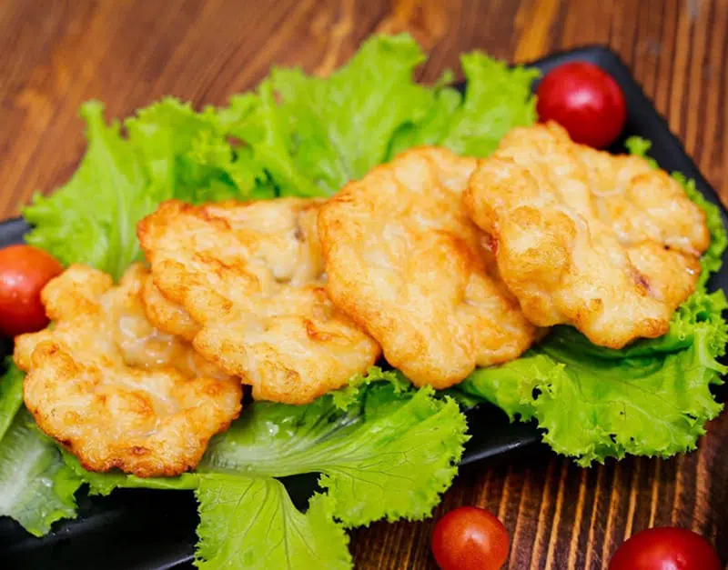
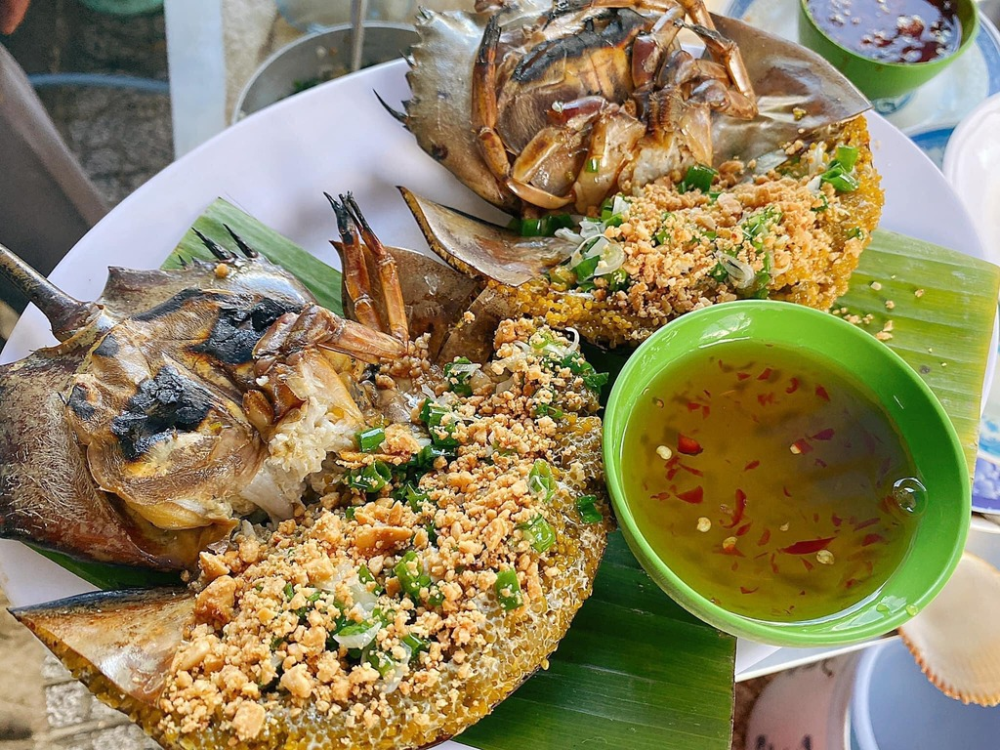
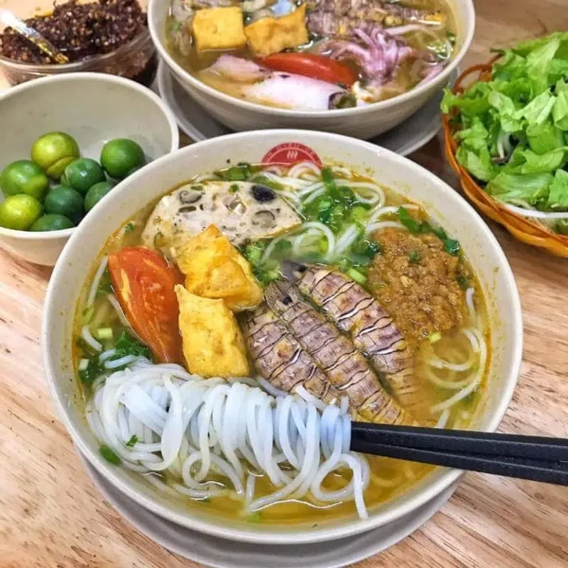
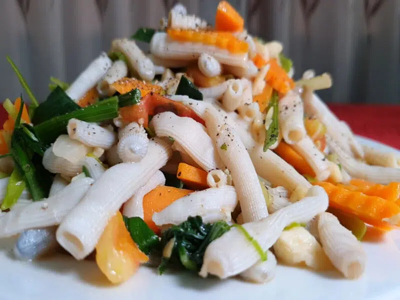
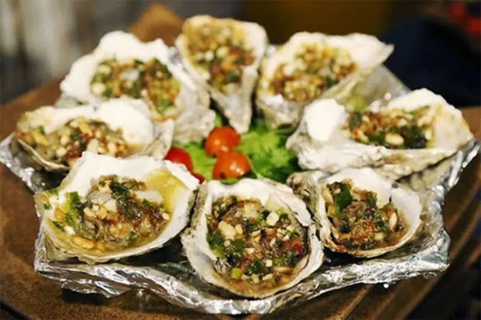
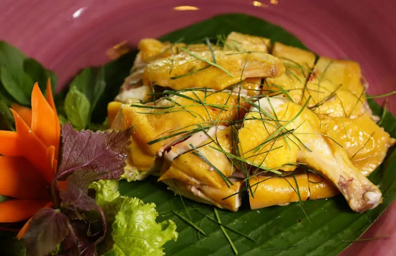
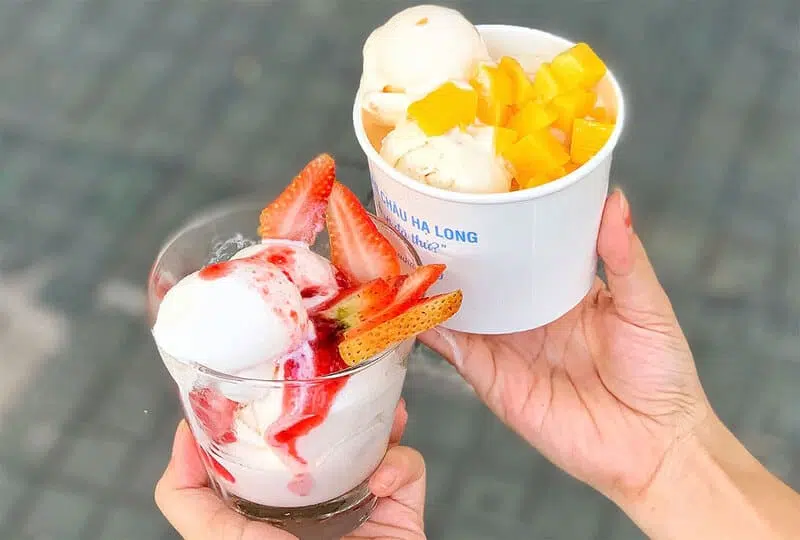

Halong Bay Street Food: 7 signature dishes
Halong Bay is not only famous for its breathtaking natural beauty but also a heaven for every street-foodie, especially seafood lovers. Since the bay is a coastal area, all of the dishes here are mostly based on seafood with light cooking style to preserve the freshness of the ingredient. It’s difficult to narrow down to which one is the best, but here’s our 7 Halong Bay street food suggestions for you and where to eat them!
1. Cha Muc (Fried Squid Cake)
Cha Muc is the top of the list and the signature dish of Halong Bay. If you’re a newcomer and ask a local where to eat, Cha Muc will always be the first recommendation. The fresh squids would be ground, combined with wheat flour, and shaped like cookies before being deep-fried. The ground squids make the food more crunchy but tasty than ever before. Cha Muc goes well with many kinds of side dishes, such as sticky rice or rolling rice cake. The price is quite cheap, only about 120,000vnd to 150,00vnd per set with 6 – 7 pieces.

2. Sam (Horseshoe Crab)
Sam (Horseshoe Crab in English) is one of Halong Bay’s most famous dishes.
One interesting fact about these crabs is that they generally connect in pairs of two, with one female carrying the male over in her back. Locals also sell two at a time since they believe you’ll get sick if you only eat one of them.
Sam could be cooked in a variety of ways and still preserving its flavors and nutrition. If this is your first time eating Sam, we suggest you should try stir-fried dish. The price would be around 700,000 – 1,500,000VND/pair.

3. Be Be Noodle
Be Be (or Mantis Shrimp) could be found in several areas in Vietnam. The freshness of its, however, was able to be gotten in coastal areas such as Halong Bay.
Be Be of Halong is on the medium side and would go well with noodles. Locals would use their crust to cook the soup to get the most out of Mantis Shrimps. This soup would then be poured into a bowl together with Be Be meat and additional ingredients such as shrimp, veggies, and tomatoes. That way, we could have a tasty Be Be noodle soup while still getting all of their nutrients. A bowl of Be Be noodle might cost only 50,000vnd – 100,000vnd.

4. Sa Sung
Despite being slightly more expensive than other dishes, Sa Sung or peanut worms it’s definitely worth your attention. The visual of its might not be too appealing at first (like a worm!), but don’t let their outward appearance deceive you. If you were brave enough to try it, the dish would open up a world of flavor to you.
Traditionally, people would sun-dry Sa Sung for a few days before preparing it. The dried Sa Sung then would be cooked with noodle or stir-frying, creating a light sweet taste to the dish.

5. Oysters
Oysters in Halong Bay is alway fresh. You could find them cooked in a variety of ways on the street of Halong, such as steamed oyster with beer or well-done with cheese. However, we recommend trying them raw with very light seasoning to completely appreciate the sea’s atmosphere and its freshness. The prices of oyster are per kilogram, ranging from 180,000vnd – 200,000vnd (5-6 pieces)

6. Tien Yen Chicken
Enough with seafood, then hop for the mountain! Halong Bay’s mother province, Quang Ninh, is home to the mountainous valley of Tien Yen. Since Tien Yen is surrounded by mountains, its chickens are naturally bred by being left to roam freely. This unique method would make Tien Yen chicken meat more chewy and tasty than ever.
Normally, restaurants would sell at least a half per order and you could ask them how you want it cooked, whether steaming, frying, or grilling. The price would be about 150,000vnd – 250,000vnd per kilogram.

7. Pearl Yogurt
Halong Bay Pearl Yogurt is a perfect treat after you filled your stomach with main course dishes. With only 20,000vnd to 30,000vnd, the owner will bring you a small cool yogurt jar and a bowl of hot coconut milk with pearls inside. Mix and try a spoonful of cold yogurt mixed with coconut water and hot pearls, you will have a pretty interesting experience with this dish!
